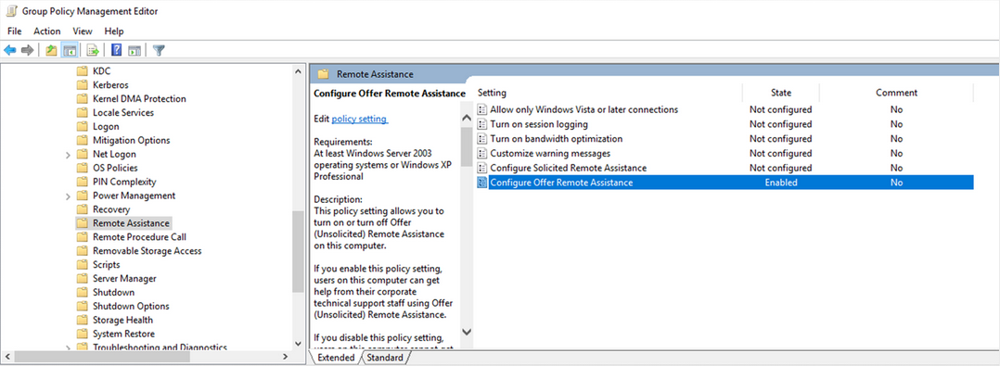
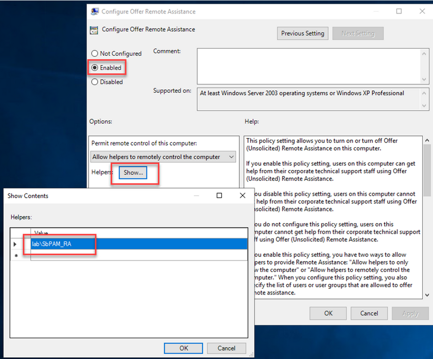
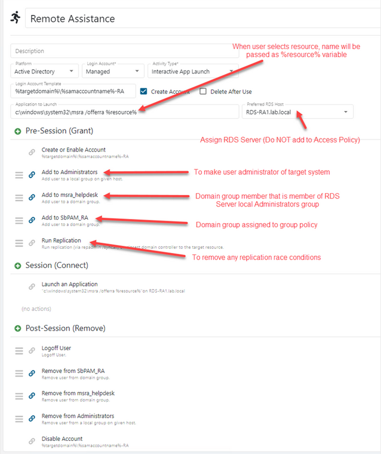
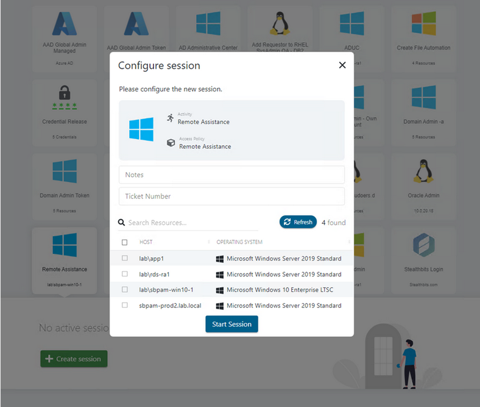
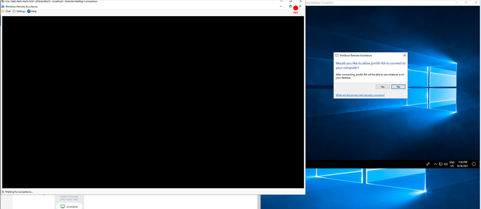
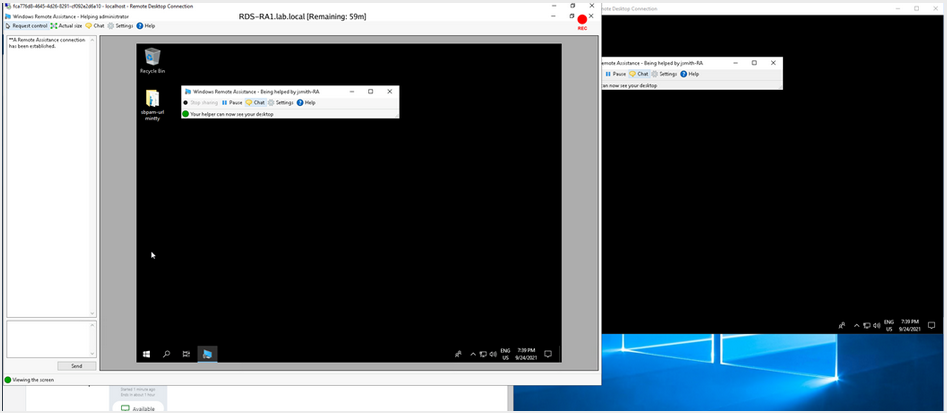
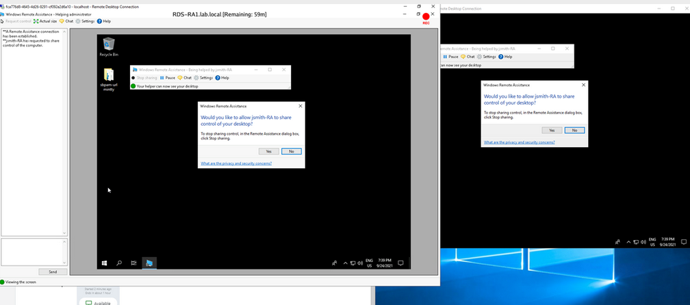
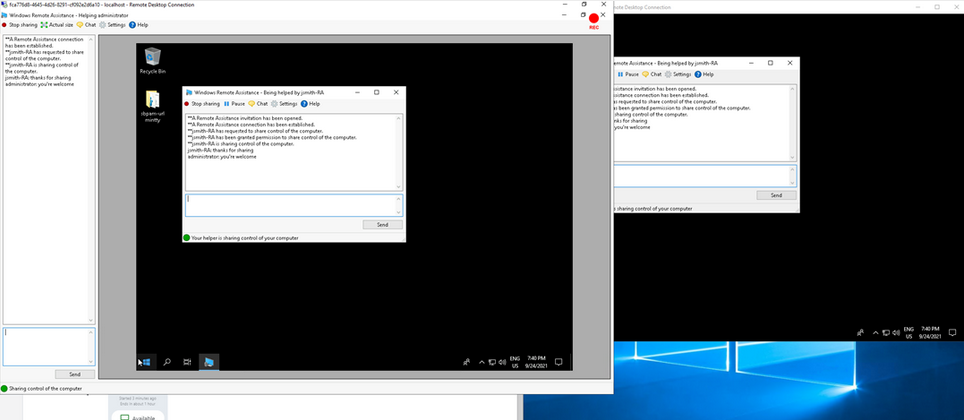
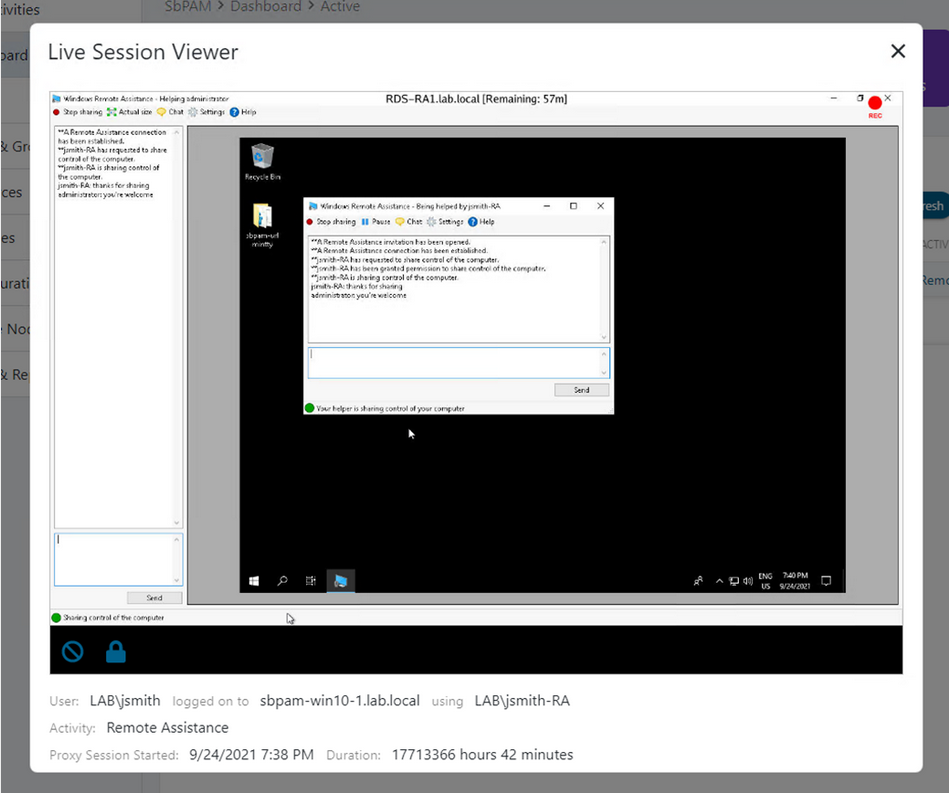

Summary
This document provides an outline and guide for SbPAM integration with Microsoft Remote Assistance.
Enrollment
- SbPAM Server
- RDS Server with RemoteApp – single machine CAL license
Pre-requisites
- Group Policy to configure ‘Offer Remote Assistance’
- Domain group to be mapped to Configure Offer Remote Assistance policy
- Domain group that will be member of RDS server local Administrator group
- Remote Assistance Feature added to RDS server
Instructions
Group Policy
Enable Configure Offer Remote Assistance policy.
Policies > Administrative Templates > System > Remote Assistance > Configure Offer Remote Assistance

Enable the policy and assign a domain group to control access.

Activity Setup
Create an Interactive App Launch Activity making note of the highlighted areas below.
NOTE: The Domain groups for Group Policy and RDS server local admin will have been created in the previous steps.

Use Case
Via SbPAM UI or DirectConnect, the helpdesk admin selects the Remote Assistance Activity and chooses resource to which is to be provided remote assistance.

When the Activity has been provisioned, the session is launched, and the target users’ desktop displays a message asking permission for the helpdesk admin to connect.

The helpdesk admin can now view the target users’ desktop and can establish a chat session.

If the helpdesk admin needs to take control of the remote system, they select Request Control and the end user is prompted for permission.

Once shared, control can be terminated at any time by the helpdesk admin or the end user.

The live session may be viewed via the SbPAM administrator dashboard or reviewed later as a recording at any time.
